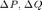

Contents
- Overview of Code (Updates on 2nd Version)
- Things to work on
- Parameters that work
- Appliances of interest
- Matlab® Code
- Load Houses; Define Parameters
- Extract Features
- Perform Clustering
- Get State transitions
- Some post processing
- Get transition probabilities
- Fix noise in clustering
- Peturbation step
- Some post processing
- Create Graphical Models
- Correct Errors
- Calculate Energy
- Plot Results
- Citations/ Sources
Overview of Code (Updates on 2nd Version)
- Gets rid of pairing requiremnts
- Lots of other tweaks here and there.
Things to work on
- If no solution can be found on perturbation, resort to pairing
- BLUED2's problem seems to be diff extraction (do high pass filetering)
- Also, for right FSM values, in check cycle the k=0 needs to be fixed
- Add co-eff of regression as a feature for high frequency data
Parameters that work
- FOR BLUED2: P_transient'; UB,LB=100; min_elem=0; multiple tries (min_elem=2 gives better accuracy for some appliances)
- For BLUED1: PQ'; UB,LB=100; min_elem=2;
- For REDD1: PP'; UB,LB=1000; min_elem=20;
Appliances of interest
- US = [Central AC, Fridge, Lights, Stove, Dishwasher, Furnace Fan, Oven, TV]
- Pitt= [Fridge, Lights, RoomAC, TV, PC, VCR, Microwave, ClothesWasher];
Matlab® Code
Load Houses; Define Parameters
clear;clc;close all; tic; % Options : BLUED1, BLUED2, REDD1 house='BLUED2'; %Load the house and define parameters specific to house if strcmp(house,'BLUED1') load ('../Data/BLUED1/BLUED1_transients.mat'); transients=T; % [Fridge(111), Lamp1(101), Lamp2(102), TV(129), Laptop(118), PC(120), AV system(112)] ID_of_interest=[111,101,102,129,118,120,112]; % States within this range are combined to one min_distance=[30, 20, 20, 20, 20, 20, 20]; % For PCA (length of transient) tran_length=[200:400]; file_path='../Data/BLUED1'; % Minimum # of elements required for a group to be considered a cluster min_elem=[5, 5, 5, 5, 5, 5, 3]; % Fluctuation flexibility for perturbation error_fluctuate_threshold=ones(length(ID_of_interest),1)*100; % Any state transitions that differ by less than this is combined combine_state_trans_threshold=ones(length(ID_of_interest),1)*30; % Anything below this will be considered as accumulated noise. %and will be used as constraint for opt in perturbation perturb_subset_threshold=ones(length(ID_of_interest),1)*10; elseif strcmp (house, 'BLUED2') %remove 1 constraint for fridge. load ('../Data/BLUED2/BLUED2_transients.mat'); %Fridge (111), TV (129), Washer(183), Laptop (120) ID_of_interest=[111 183 120 129]; transients=T; min_distance=ones(length(ID_of_interest),1)*10; tran_length=[30:150]; file_path='../Data/BLUED2'; min_elem=zeros(length(ID_of_interest),1); error_fluctuate_threshold=[30 200 100 100]; combine_state_trans_threshold=ones(length(ID_of_interest),1)*30; perturb_subset_threshold=[30 50 20 20]; elseif strcmp (house, 'REDD1') load ('../Data/REDD1/REDD1_transients.mat'); %[oven(3), fridge (5), dishwasher (6),lighting (9), %washer (10), %microwave(11), dryer(20)] ID_of_interest=[3 5 6 9 10 11 20]; transients=T; min_distance=[30 30 30 30 30 30 30]; tran_length=[5:21]; file_path='../Data/REDD1'; min_elem=[20, 20, 20, 20, 20, 20, 30]; error_fluctuate_threshold=[100, 100, 300,100 100 100 100]; combine_state_trans_threshold=ones(length(ID_of_interest),1)*30; perturb_subset_threshold=[30 10 30 10 10 10 10]; elseif strcmp (house, 'Simulated_Data') load('../Data/Simulated_Data/simulated_transients_1.mat'); ID_of_interest=[1 2 3 4 5]; tran_length=[1:20]; file_path='/Users/sumangiri/Desktop/FSM/Data/simulated_data/simulated_transients'; min_elem=[20, 20, 20, 20, 20, 20, 30]; error_fluctuate_threshold=[100, 100, 300,100 100 100 100]; combine_state_trans_threshold=ones(length(ID_of_interest),1)*30; perturb_subset_threshold=[10 10 30 10 10 10 10]; else error ('File not available yet'); end
Extract Features
() ;Real Transient; PC projections
for i = 1:length(ID_of_interest) PQ{1,i}=[0 0]; P_transient{1,i}=zeros(1,length(transients(1).P(tran_length))); P_diff{1,i}=[]; time_stamps{1,i}=[]; for j = 1:length(transients) if transients(1,j).label==ID_of_interest(i) transients(1,j).P=transients(1,j).P(:)'; PQ{1,i}=[PQ{1,i}; transients(1,j).dP transients(1,j).dQ]; P_transient{1,i}=[P_transient{1,i};transients(1,j).P(tran_length)]; P_diff{1,i}=[P_diff{1,i}; transients(1,j).dP]; temp_time=round((transients(1,j).t-datenum(1970,1,1))*86400); time_stamps{1,i}=[time_stamps{1,i}; temp_time]; end end P_transient{1,i}(1,:)=[];PQ{1,i}(1,:)=[]; [~,sort_index]=sort(time_stamps{1,i}); % Sort things time-wise PQ{1,i}=PQ{1,i}(sort_index,:); P_transient{1,i}=P_transient{1,i}(sort_index,:); P_diff{1,i}=P_diff{1,i}(sort_index); time_stamps{1,i}=time_stamps{1,i}(sort_index); [PC_axes temp_PC_projections]=pca(P_transient{1,i},'NumComponents',2); PC_projections{1,i}=temp_PC_projections; end
Select features
Options: PQ', PC_projections', P_transient' ;
if strcmp (house, 'BLUED2') feature=P_transient'; else feature= PQ'; end
Perform Clustering
Select Clustering Algorithms:
Options: k-means, dbscan, optics, spectral_clustering, affinity_propagation
- gap_statistics : Finds the gap statistics to calculate the optimum # of k-means clusters
- kmeans_plus : Finds the optimum initialization points for improved k-means
- dbscan : Performs DBSCAN clustering
- optics : Performs OPTICS clustering
- SimGraph_NearestNeighbors : Calculates the similarity matrix for Spectral Clustering
- cluster_rotate : Rotate eigenvectors to align with canonical co-ordinate system (for spectral clustering)
- similarity function : Calculate similarity matrix (for affinity propagation)
- apcluster : Finds clusters using affinity propagation
cluster_alg='affinity_propagation'; plot_options.cluster_alg=cluster_alg; for i =1:length(feature)
x=feature{i,1};
temp_assigned_clusters=zeros(size(x,1),1);
switch cluster_alg
case 'k-means'
[est_num_clust,~]=gap_statistics(x, 1:6, 2000,1);
[temp_assigned_clusters,~]=kmeans_plus(x',est_num_clust);
case 'dbscan'
[temp_assigned_clusters,~]=dbscan (x,2,[]);
case 'optics'
[~,~,~,temp_assigned_clusters]=optics(x,5);
case 'spectral_clustering'
W=SimGraph_NearestNeighbors(x',7,1,0);
[clusts,best_group_index,Quality,Vr] = cluster_rotate(W,[2:6],0,1);
best_clust=clusts(best_group_index);
best_clust=best_clust{1,1};
for j = 1:length(best_clust)
temp_assigned_clusters(best_clust{1,j})=j;
end
case 'affinity_propagation'
[s,p]=similarity_function(x);
[temp_assigned_clusters,netsim,dpsim,expref]=apcluster(s,p);
otherwise
error('typo in clustering algorithm')
end
% Add 5000 to make sure the assigned cluster numbers are positive; mostly
% to avoid bugs
temp_assigned_clusters=temp_assigned_clusters+5000;
Get State transitions
- get_state_transitions : Get the representative power differential(median) at each cluster; filters out noise (any cluster with less than 3 points)
[state_transitions{i}, transition_labels{i}]=...
get_state_transitions(temp_assigned_clusters,P_diff{1,i},min_elem(i));
Some post processing
- combine_close_state_transitions : Combines state transitions that are within a certain range of each other as dictated by the variable combine_state_trans_threshold
[temp_assigned_clusters, state_transitions{i}, transition_labels{i}]=...
combine_close_state_transitions(temp_assigned_clusters, state_transitions{i}, ...
transition_labels{i},combine_state_trans_threshold(i));
- make_nine_clusters : Code breaks down if there are more than 9 clusters (Highly unlikely event for any appliance to begin with) Currently, it is remedied by reclustering the state means from the original clustering algorithm to form 9 clusters.
if length(transition_labels{i})>9 display ('reducing number of clusters to 9'); [temp_assigned_clusters, state_transitions{i}, transition_labels{i}]=... make_nine_clusters(temp_assigned_clusters, state_transitions{i}, transition_labels{i}); if length(transition_labels{i})>9 error('code falls apart if more than 9 clusters') end end
Sort events so that ons are before off; The model assumes ON->OFF transmission models
a=find(state_transitions{i}>0);
b=find(state_transitions{i}<0);
% Make sure everything is a column vector. Important for how the code
% is set up.
state_transitions{i}=state_transitions{i}(:);
transition_labels{i}=transition_labels{i}(:);
a1=sortrows([state_transitions{i}(a) transition_labels{i}(a)],1);
b1=sortrows([state_transitions{i}(b) transition_labels{i}(b)],-1);
state_transitions{i}=[a1(:,1); b1(:,1)]';
transition_labels{i}=[a1(:,2); b1(:,2)]';
Get transition probabilities
- get_transition_probabilities : Calculate transition probabilities for the new_state_transitions as observed from the sequence of clusters obtained from clustering algorithm
transition_probabilities{i} =...
get_transition_probabilities(temp_assigned_clusters, transition_labels{i});
temp_transition_probabilities{i}=transition_probabilities{i};
Fix noise in clustering
Get the labels that were classified as noise, and reclassify them as the most likely Markovian state
noisy_event_indices=find(~ismember(temp_assigned_clusters,transition_labels{i}));
if length(noisy_event_indices)>0
previous_index_val=temp_assigned_clusters(noisy_event_indices-1);
for k1 = 1:length(noisy_event_indices)
previous_indices=find(transition_labels{i}==previous_index_val(k1));
%if the previous index is also noisy, look for the one before
%that
if length(previous_indices)<1
p=2;
while length(previous_indices)<1
previous_index_temp=temp_assigned_clusters(noisy_event_indices(k1)-p);
previous_indices=find(transition_labels{i}==previous_index_temp);
p=p+1;
end
end
[~,max_index]=max(transition_probabilities{i}(previous_indices,:));
temp_assigned_clusters(noisy_event_indices(k1))=transition_labels{i}(max_index);
end
end
Peturbation step
- perturb_state_transitions Perturb events so that event transitions are rounded off and ZLSC holds
- Requires the CVX Toolbox for Matlab®
- Calls AllSubsets
new_state_transitions{i} = perturb_state_transitions3...
(state_transitions{i}, error_fluctuate_threshold(i), perturb_subset_threshold(i));
Some post processing
If some states are repeated, get rid of them
[new_state_transitions_temp, idx2]=unique(new_state_transitions{i});
new_state_transitions_temp=new_state_transitions{i}(sort(idx2));
for i2= 1:length(new_state_transitions_temp)
temp_index1=find(new_state_transitions{i}==new_state_transitions_temp(i2));
temp_assigned_clusters(ismember(temp_assigned_clusters,transition_labels{i}(temp_index1)))=...
transition_labels{i}(temp_index1(1));
transition_labels{i}(temp_index1)=...
transition_labels{i}(temp_index1(1));
end
new_state_transitions{i}=new_state_transitions_temp;
transition_labels{i}=transition_labels{i}(sort(idx2));
zero_index= abs(new_state_transitions{i})<5;
new_state_transitions{i}(zero_index)=[];
transition_labels{i}(zero_index)=[];
- reassign_clusters : If PCA was used as feature, re-calculate and re-assign cluster centers (using perturbed values)
if strcmp (house, 'BLUED2') temp_assigned_clusters=reassign_clusters(new_state_transitions{i},... transition_labels{i}, P_diff{i}); end % Store clusters for each applaince ID assigned_clusters{i,1}=temp_assigned_clusters; % Recalculate transition probabilities from new state transitions transition_probabilities{i} =... get_transition_probabilities(temp_assigned_clusters, transition_labels{i}); temp_transition_probabilities{i}=transition_probabilities{i}; % Change it into a graph (adjacency matrix) transition_probabilities{i}(transition_probabilities{i}>0)=1;
Create Graphical Models
- find_elem_circuits : Find all possible cycles from the directed graph of adjacency matrix
[~, cycles{i}]=find_elem_circuits(transition_probabilities{i});
cycles{i}{end+1}=[1:length(transition_labels{i}) 1];
- sort_cycles : Sort cycles so that on comes before off (not sure if necessary anymore)
new_cycles_temp{i}=sort_cycles(cycles{i});
- check_cycles : Get rid of cycles that are not possible (violate ZLSC)
new_cycles{i}=check_cycles(new_cycles_temp{i},new_state_transitions{i});
- create_adjacency : Create a new adjancency matrix based on possible cycles only
new_transition_probabilities{i}=create_adjacency (new_cycles{i},new_state_transitions{i});
- get_states : Calculate the states that an appliance can exist in based on the new state transitions and possible cycles. States within min_distance of each other are combined to represent one state
[new_states{i} adjacency_matrix{i}]= get_states (new_cycles{i}, new_state_transitions{i}, ...
new_transition_probabilities{i}, min_distance(i));
Correct Errors
- correct_sequence : Correct errors in the sequence (i.e. replace state tranistions that are not possible (based on the adjacency matrix) by replacing them with the most likely state
corrected_sequence {i}= correct_sequence2(new_cycles{i},assigned_clusters{i}, ...
transition_labels{i}, new_transition_probabilities{i},temp_transition_probabilities{i});
%corrected_sequence{i}=assigned_clusters{i};
Calculate Energy
[energy{i}, power_trace{i}, gt_energy{i}]=calculate_energy(corrected_sequence{i}', ...
time_stamps{i}, new_state_transitions{i},transition_labels{i},new_states{i},...
ID_of_interest(i),file_path);
Plot Results
- plot_figures : plot various things
% Clustering results plot_options.cluster_flag='false'; % FSM model plot_options.fsm_flag='false'; % Reconstructed power trace based on final energy estimation framework plot_options.recon_trace='true'; % State transition diagram plot_options.state_transitions='false'; plot_figures(plot_options, assigned_clusters{i}, transition_labels{i}, state_transitions{i},... feature{i}, new_transition_probabilities{i}, round(new_state_transitions{i}),adjacency_matrix{i},... new_states{i},power_trace{i}, energy{i}, ID_of_interest, i,file_path)
Compare results of energy estimation using the framework with ground truth
compare(i,:)=[str2num(sprintf('%0.1f',energy{i})) str2num(sprintf('%0.1f',gt_energy{i})) ... str2num(sprintf('%0.1f',100*(-1*energy{i}'+gt_energy{i}')./gt_energy{i}))];
end
toc;